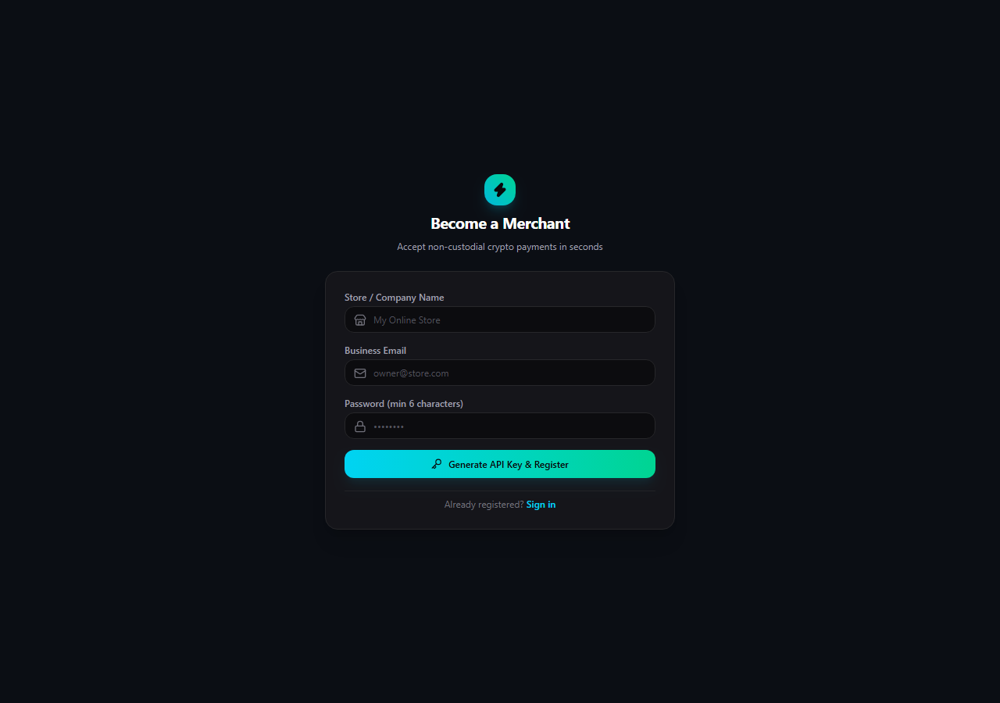
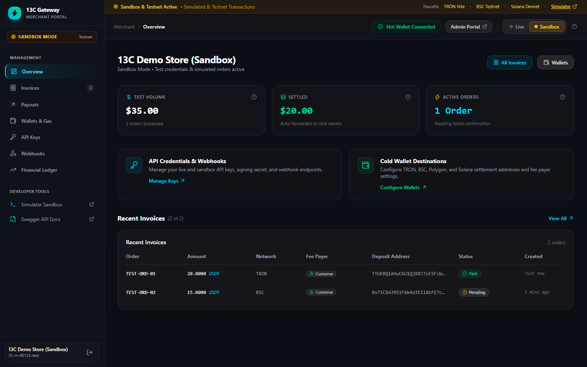
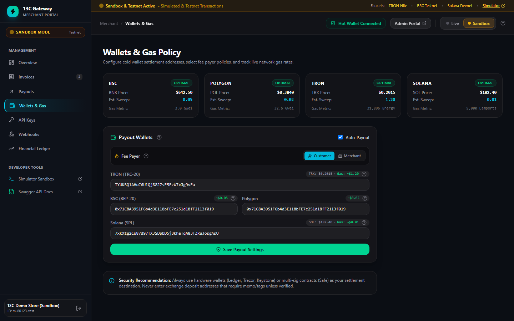
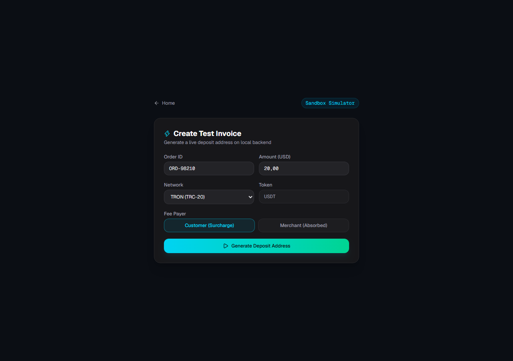
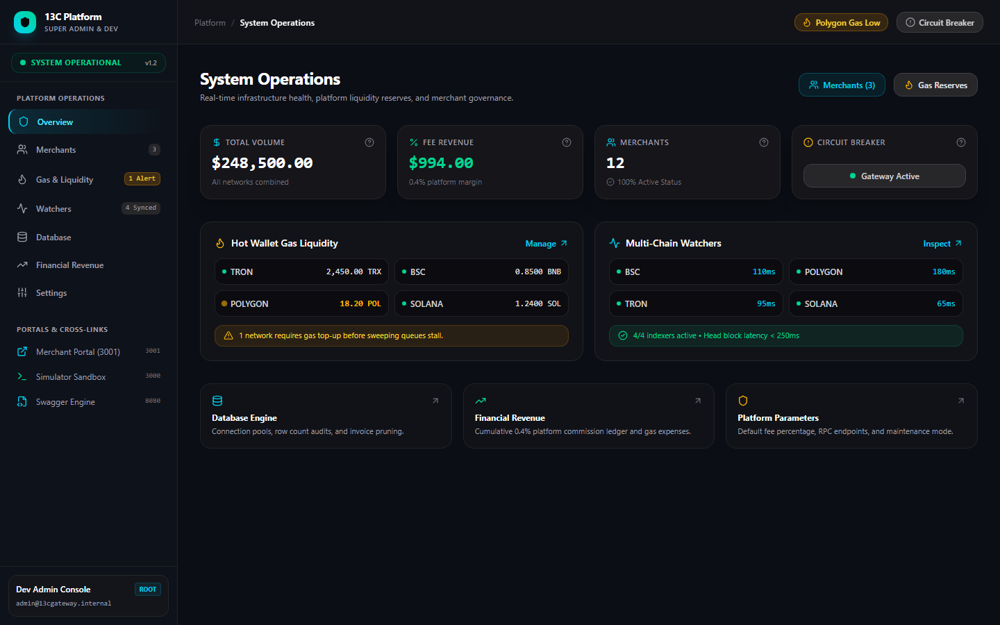
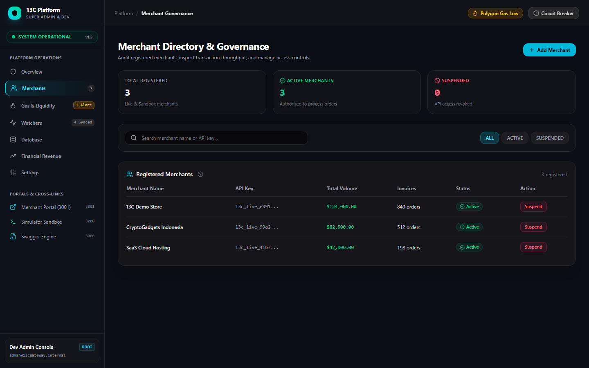
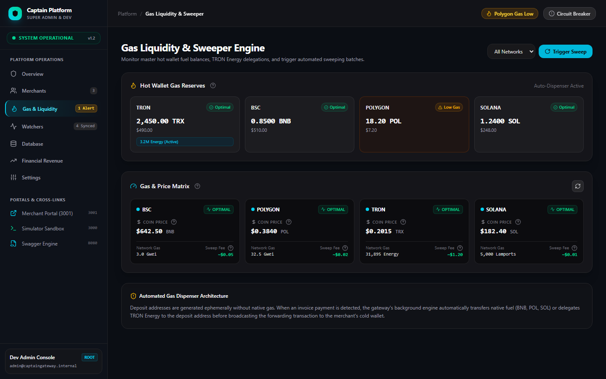

13C Crypto Payment Gateway dirancang untuk memecahkan kelemahan terbesar payment gateway sentralistik konvensional, yaitu risiko pembekuan dana sepihak (fund freezing) dan biaya perantara ganda.
Dengan arsitektur Non-Custodial Instant Forwarding, sistem 13C tidak pernah mengendapkan saldo merchant di akun perantara. Setiap pembayaran yang diverifikasi on-chain langsung disapu (swept) ke Cold Wallet Pribadi Merchant yang aman.
1.2 Multi-Chain Network Matrix
Sistem secara native mendukung 4 ekosistem blockchain utama dunia dengan biaya transaksi rendah dan finalitas blok instan:
Generasi Kunci Kriptografi: Saat toko memanggil endpoint pembuatan invoice, backend Go membangkitkan pasangan kunci (keypair) baru secara dinamis menggunakan algoritma kriptografi standar industri (ECDSA secp256k1 untuk EVM/TRON dan Ed25519 untuk Solana).
Enkripsi Kunci Privat: Kunci privat dari alamat deposit langsung dienkripsi menggunakan sandi militer AES-256-GCM sebelum disimpan ke database.
Masa Berlaku Tagihan: Tagihan memiliki masa aktif 15–30 menit dengan hitung mundur presisi. Alamat yang kedaluwarsa tanpa pelunasan otomatis dinonaktifkan.
BAB 2: PANDUAN PENGGUNA MERCHANT PORTAL
2.1 Pendaftaran Akun & Protokol Reveal Once API Key
Untuk mendaftarkan akun merchant baru, kunjungi rute `/register`:

Registrasi Merchant
Masukkan Nama Toko / Perusahaan, Business Email, dan Password (minimal 6 karakter).
Klik tombol Generate API Key & Register.
PENTING (Protokol Reveal Once): Sistem akan menampilkan kartu modal khusus yang memuat Production API Key dan Webhook Secret.
Kunci ini hanya ditampilkan satu kali demi alasan keamanan tingkat tinggi.*
Segera klik tombol salin (copy*) dan simpan di password manager atau file konfigurasi `.env` server toko Anda.
Di dalam database 13C Gateway, API Key disimpan dalam bentuk hash SHA-256, sehingga kunci asli tidak dapat dibaca oleh siapa pun jika database diretas.
2.2 Autentikasi & Arsitektur Multi-Route Sidebar
Kunjungi halaman login di `/login`:
Login Merchant
Masukkan email bisnis dan password yang telah didaftarkan.
Setelah berhasil masuk, Anda akan diarahkan ke Merchant Portal berbasis Persistent Sidebar dan Multi-Route Navigation:

Merchant Overview
Merchant Portal dipecah menjadi beberapa rute terdedikasi:
`/` (Overview & KPI): Menampilkan metrik volume kotor, total settled, pesanan aktif, ringkasan saldo gas, dan 5 invoice terbaru.
`/invoices` (Invoices & Orders): Tabel pencarian tagihan lengkap dengan live filter pencarian, filter jaringan blockchain, dan status order.
`/payouts` (Payouts & Settlements): Riwayat transfer non-custodial ke cold wallet merchant dilengkapi tautan langsung ke explorer blockchain (BscScan, Tronscan, Polygonscan, Solscan).
`/wallets` (Wallets & Gas Policy): Konfigurasi alamat cold wallet tujuan settlement, toggle auto-payout, dan pemilih kebijakan penanggung gas (Fee Payer).
`/api-keys` (API Credentials): Kredensial API Key publik, Secret Key HMAC-SHA256, modal Reveal Once, dan cuplikan kode integrasi cURL / Node.js.
`/webhooks` (Webhook Logs): Konfigurasi callback URL, log pengiriman notifikasi HTTP POST, inspeksi status code (200 OK), dan tombol Test Ping.
`/reports` (Financial Ledger): Buku besar akuntansi pembukuan, akumulasi pendapatan bruto, potongan fee gateway (dinamis / %), biaya gas, dan tombol ekspor CSV.
2.3 Manajemen Tagihan Pelanggan (`/invoices`)
Pada halaman Invoices & Orders:
Merchant Invoices Table
Pencarian Real-Time: Masukkan nomor Order ID, Invoice ID, atau Deposit Address pada kolom pencarian untuk melacak transaksi secara instan.
Filter Jaringan & Status Dropdown: Gunakan dropdown ringkas untuk memfilter berdasarkan rantai blockchain (All Networks, BSC, Polygon, TRON, Solana) dan status (`All Statuses`, `PAID`, `DETECTED`, `PENDING`, `UNDERPAID`).
Tri-State Resilience: Jika tidak ada data yang cocok, sistem menyajikan Empty State informatif lengkap dengan tombol Reset Filter.
2.4 Konfigurasi Cold Wallet Payout & Gas Policy (`/wallets`)
Pada halaman Wallets & Gas Policy:

Merchant Wallets & Gas Policy
Masukkan alamat cold wallet penerima untuk masing-masing jaringan:
TRON Address: Alamat Base58 berawalan huruf `T` (misal dompet TronLink, Ledger, atau Binance).
Pastikan centang toggle Auto-Payout aktif agar dana otomatis diteruskan begitu transaksi terdeteksi.
Pengaturan Fee Payer (Customer Surcharge vs. Merchant Absorbed):
Opsi Customer (Direkomendasikan): Biaya gas jaringan ditambahkan ke total invoice tagihan pembeli. Pembeli membayar produk + gas surcharge, merchant menerima nominal bersih 100%.
Opsi Merchant: Pembeli membayar nominal pas harga produk, biaya gas penyapuan dipotong dari saldo yang masuk ke cold wallet merchant.
Live Coin & Gas Matrix: Pantau harga real-time koin native (BNB, POL, TRX, SOL) serta estimasi biaya transaksi sweeping terkini.
Sweep Gas: Estimasi biaya gas jaringan yang dikeluarkan untuk sweeping on-chain.
Filter Rentang Waktu: Pilih `7D` (7 hari terakhir), `30D` (30 hari terakhir), atau `ALL` (sepanjang waktu).
Ekspor CSV: Klik tombol Export CSV untuk mengunduh laporan pembukuan langsung ke komputer Anda dalam format spreadsheet.
2.6 Log Webhook & Tombol Test Ping / Manual Replay
Tabel Recent Invoices: Menampilkan nomor pesanan, nominal kripto, jaringan, deposit address, indikator Fee Payer, dan status terkini (`PENDING`, `DETECTED`, `PAID`, `UNDERPAID`, `EXPIRED`).
Tabel Settlement Transfers: Menampilkan bukti tx hash on-chain dari penyapuan dana ke cold wallet Anda.
Kartu Webhook Delivery Logs: Menampilkan riwayat pengiriman notifikasi HTTP POST ke server toko Anda lengkap dengan kode HTTP respons (200 OK) dan tanda tangan HMAC.
Tombol Manual Replay: Jika endpoint toko sempat offline saat transaksi terjadi, merchant dapat mengklik tombol Replay untuk memicu ulang pengiriman webhook secara instan.
2.7 Manajemen Multi-Toko (Multi-Store per Merchant)
Bagi merchant yang memiliki beberapa toko online atau cabang bisnis:
Strategi Prefix Order ID: Sistem secara otomatis mengisolasi transaksi antar toko menggunakan prefix order unik (contoh: `STORE1-ORD-101`, `STORE2-ORD-202`). Filter pencarian dashboard dapat menyaring data berdasarkan prefix toko secara instan.
Kustomisasi Callback Dinamis per Tagihan: Setiap request pembuatan invoice dapat menyertakan parameter `callback_url` spesifik untuk toko yang bersangkutan, sehingga notifikasi diarahkan langsung ke domain masing-masing toko.
Multi-Akun Merchant Terisolasi: Super Admin dapat mendaftarkan beberapa entitas merchant untuk grup bisnis yang sama, memberikan pemisahan API Key, laporan pembukuan, dan dompet cold storage yang terpisah 100%.
BAB 3: TUTORIAL INTEGRASI TOKO ONLINE (MERCHANT INTEGRATION)
3.1 Pembuatan Tagihan via REST API (cURL, Node.js, PHP, Python)
Verifikasi Tanda Tangan di Backend Merchant (Node.js):
javascript
import crypto from 'crypto';
function verifyWebhook(rawBody, signatureHeader, webhookSecret) {
const calculatedSig = crypto
.createHmac('sha256', webhookSecret)
.update(rawBody)
.digest('hex');
// Wajib menggunakan timingSafeEqual untuk mencegah timing attacks
return crypto.timingSafeEqual(
Buffer.from(calculatedSig, 'hex'),
Buffer.from(signatureHeader, 'hex')
);
}
3.4 Plugin Resmi WooCommerce WordPress (`plugins/woocommerce-13c-gateway`)
Bagi pengguna CMS WordPress WooCommerce:
Unduh arsip zip plugin dari `plugins/woocommerce-13c-gateway.zip`.
Buka WP-Admin $\to$ Plugins $\to$ Add New $\to$ Upload Plugin.
Masukkan API Key dan Webhook Secret di menu WooCommerce $\to$ Settings $\to$ Payments $\to$ 13C Crypto.
Pembeli di toko WooCommerce otomatis dapat memilih opsi bayar kripto dengan konfirmasi status pesanan otomatis menjadi `Processing` atau `Completed`.
BAB 4: PANDUAN PENGUJIAN SANDBOX & JARINGAN TESTNET
4.1 Menggunakan Sandbox Simulator Bawaan
13C Gateway dilengkapi lingkungan pengujian mandiri di rute `:3000`:

Sandbox Simulator
Pembuatan Tagihan Uji: Pilih jaringan yang ingin diuji (BSC Testnet, Polygon Amoy, TRON Nile, Solana Devnet), masukkan nominal USD, dan klik Generate Test Invoice.
Simulasi Pembayaran 1-Klik: Klik tombol Simulate Payment (Sandbox). Backend akan menyimulasikan event transfer on-chain masuk secara instan, memicu Server-Sent Events (SSE) di widget, dan mendistribusikan notifikasi Webhook HMAC ke endpoint pengujian Anda.
4.2 Pengujian Transaksi On-Chain Menggunakan Faucet Testnet Resmi
Jika Anda ingin menguji transaksi kripto menggunakan dompet fisik (MetaMask, Phantom, TronLink) tanpa risiko modal riil:
BSC Testnet: Ambil token tBNB dan testnet USDT di faucet resmi `https://testnet.binance.org/faucet-smart`.
Polygon Amoy: Ambil testnet POL di `https://faucet.polygon.technology/`.
TRON Nile: Ambil testnet TRX dan TRC-20 USDT di `https://nileex.io/join/getJoinPage`.
Solana Devnet: Dapatkan SOL devnet via terminal: `solana airdrop 1 --url devnet`.
Kurang Bayar (Underpaid): Jika pembeli mentransfer nominal di bawah tagihan namun masih dalam batas `underpaid_tolerance` (misal 1%), sistem tetap menandai pesanan sebagai `PAID`. Jika di luar toleransi, status menjadi `UNDERPAID` dan notifikasi khusus dikirim ke toko.
Lebih Bayar (Overpaid): Tagihan ditandai `PAID` dengan sisa saldo lebih dicatat di buku besar internal.
Kedaluwarsa (Expired): Tagihan yang tidak dilunasi hingga hitung mundur habis otomatis ditandai `EXPIRED` dan deposit address dinonaktifkan.
BAB 5: PANDUAN DEVOPS & SUPER ADMIN PORTAL
5.1 Dashboard Monitoring Operasional Platform
Kunjungi Super Admin Console di rute `:3002` (Login: `admin@13cgateway.internal`):

Super Admin Overview
Total Volume Transaksi: Pantau akumulasi transaksi bruto seluruh merchant secara agregat.
Status Kesehatan Daemon: Indikator live status Watcher, Sweeper Engine, dan Webhook Dispatcher.
Tabel Merchant Directory Governance:

Merchant Directory Governance
Admin memiliki kontrol penuh untuk menambah merchant baru, merotasi API key, mengedit penanggung gas, menangguhkan akun pelanggar, dan menghapus data merchant.
5.2 Manajemen Cadangan Gas Hot Wallet & Alert Otomatis
Pada rute `/gas`:

Gas Liquidity & Sweeper Engine
Gateway memerlukan sedikit saldo native kripto (BNB, POL, TRX, SOL) di Master Hot Wallet Platform untuk membiayai eksekusi transaksi sweeping dari deposit address ke cold storage merchant.
Pada rute `/database`, klik tombol Run Prune untuk membersihkan invoice berstatus `EXPIRED` dan `CANCELLED` yang umurnya melewati batas retensi (30 hari).
Infrastruktur 13C Payment Gateway tidak bergantung pada satu penyedia RPC blockchain. Super Admin dapat mendaftarkan beberapa endpoint RPC untuk masing-masing jaringan (BSC, Polygon, TRON, Solana) langsung dari antarmuka Web Console:
Circuit Breaker per RPC: Sistem secara otomatis mendeteksi latensi tinggi (>3.000 ms) atau tingkat kegagalan (HTTP 429 Too Many Requests / 5xx*) dan mengalihkan panggilan ke node RPC sekunder secara transparan.
Health Check Otomatis: Daemon latar belakang mengirimkan ping JSON-RPC berkala (`eth_blockNumber`, `getLatestBlock`, dsb.) setiap 30 detik untuk memastikan node dalam kondisi sinkron.
6.2 Otentikasi Super Admin & Keamanan 2FA (TOTP)
Akses ke Super Admin Console dilindungi oleh lapisan keamanan berlapis:
Otentikasi Kredensial & TOTP: Menggunakan kombinasi email/password terenkripsi `bcrypt` dan verifikasi One-Time Password berbasis RFC 6238 (Google Authenticator / Authy).
Next.js BFF Reverse Proxy (Anti-Inspection):
Seluruh panggilan API dari browser admin dialihkan melalui Next.js Backend-for-Frontend (BFF) di `/api/admin/`.
Endpoint backend internal Go (`http://localhost:8080`) tidak pernah diekspos langsung ke publik.
Header otorisasi JWT disematkan di sisi server (Server-Side Route Handler*) sehingga token tidak dapat diinspeksi atau dicuri melalui DevTools browser.
6.3 Manajemen Merchant & Toko (Full CRUD)
Super Admin memiliki kendali penuh terhadap operasional seluruh ekosistem:
Aktivasi & Penonaktifan: Menonaktifkan merchant nakal secara instan tanpa mengganggu merchant lain.
Override Biaya Layanan: Mengatur persentase potongan platform fee (misal 0.5% atau 1%) per merchant.
Monitoring Volume Transaksi: Grafik real-time agregat volume transaksi, rasio keberhasilan invoice, dan cadangan gas native platform.
BAB 7: ARSITEKTUR ESCROW VS INSTANT FORWARD & PENARIKAN
Pelanggan tidak perlu me-refresh halaman saat menunggu konfirmasi blockchain.
Begitu transaksi terdeteksi di mempool atau kedalaman blok terpenuhi, widget secara instan berubah status menjadi `DETECTED` kemudian `PAID` dengan animasi sukses interaktif.
Dilengkapi fallback polling* otomatis jika browser pelanggan memblokir koneksi SSE.
9.2 Optimasi Biaya Gas TRON (Energy Rental)
Transaksi transfer token TRC-20 pada jaringan TRON membutuhkan energi besar (~65.000 Energy per transfer) yang jika dibayar dengan TRX mentah (burn TRX) dapat menghabiskan 13 - 27 TRX per transaksi.
Dukungan Delegasi Energi: 13C mendukung integrasi dengan penyedia sewa energi TRON (Feee.io / JustLend).
Penghematan Signifikan: Biaya transaksi TRC-20 berkurang hingga 70%–85%, memaksimalkan margin keuntungan platform dan merchant.
9.3 Indeks Majemuk Basis Data & Pemangkas Otomatis (Pruner)
Kueri Skala Jutaan Record: Tabel `invoices` dan `webhook_logs` diindeks menggunakan B-Tree Composite Indexes* (`(merchant_id, status, created_at)` dan `(pay_network, address)`).
Automated Data Pruner: Daemon pembersih membersihkan log webhook berhasil yang berumur lebih dari 30 hari secara berkala pada jam non-sibuk (off-peak hours*) untuk menjaga ukuran file database tetap ramping dan responsif.
BAB 10: INTEGRASI HYBRID FIAT GATEWAY (KAGUH.ID)
10.1 Konsep Solusi Hybrid (Fiat + Kripto)
Banyak merchant digital memerlukan penerimaan pembayaran dua arah: mata uang fiat lokal Indonesia (Rupiah/IDR melalui QRIS, Virtual Account BCA/BRI/Mandiri, E-Wallet) dan mata uang kripto global (USDT & USDC).
Platform 13C Crypto Payment Gateway dirancang untuk dapat digabungkan secara mulus dengan penyedia Fiat Payment Gateway, seperti Kaguh.id (`https://docs.kaguh.id/` & `https://business.kaguh.id/`).
Sesuai dengan spesifikasi OpenAPI v2.0 Kaguh.id, setiap transaksi fiat dibuat melalui endpoint:
`POST https://api.kaguh.id/v2/transactions`
Parameter Transaksi Kaguh:
`partner_order_id`: ID unik transaksi dari sistem merchant.
`product_code`: Kode kanal pembayaran (misal `QRIS`, `VA_BCA`, `VA_MANDIRI`, `OVO`, `DANA`).
`amount`: Nominal tagihan dalam mata uang Rupiah (IDR).
`customer_name`: Nama pembeli.
`customer_email`: Alamat email pembeli.
`callback_url`: URL webhook untuk menerima update status transaksi.
10.3 Pemetaan Kanal Kripto 13C pada Ekosistem Kaguh
Jika Kaguh bertindak sebagai agregator pembayaran utama (Single Entry-Point), kanal 13C didaftarkan sebagai saluran pembayaran digital dengan `product_code` khusus:
`CRYPTO_USDT_TRON` : Tether pada jaringan TRON (TRC-20)
`CRYPTO_USDT_BSC` : Tether pada jaringan Binance Smart Chain (BEP-20)
`CRYPTO_USDT_POL` : Tether pada jaringan Polygon (ERC-20)
`CRYPTO_USDT_SOL` : Tether pada jaringan Solana (SPL)
Alur Eksekusi Bridge API:
10.4 Layanan Konversi Kurs Otomatis (Rate Service)
Untuk menghubungkan nilai Rupiah (IDR) pada tagihan Kaguh dengan nominal token kripto (USDT):
Ticker Otomatis: Modul `RateService` pada 13C melakukan agregasi kurs real-time dari bursa terdaftar (Indodax, Tokocrypto, atau Binance P2P IDR).
Perlindungan Volatilitas (Price Lock Period): Nilai kurs dikunci (locked) selama durasi aktif invoice (misal 15 menit). Jika nilai $1 \text{ USDT} = \text{Rp } 15.800$, maka tagihan Rp 158.000 akan menghasilkan nilai pembayaran tepat $10,000000 \text{ USDT}$.
Penyelarasan Webhook (Webhook Harmonization):
Payload webhook dari 13C diterjemahkan ke format payload standar Kaguh:
BAB 11: PANDUAN PEMECAHAN MASALAH (TROUBLESHOOTING & FAQ)
11.1 Kasus Pembayaran Kurang (Underpaid Invoices)
Masalah: Pelanggan mengirimkan nominal lebih sedikit dari tagihan karena terpotong biaya transfer dari bursa (misal transfer $10, namun bursa memotong fee $1 sehingga hanya sampai $9).
Solusi Otomatis:
13C menyediakan fitur `underpaid_threshold_percentage` (default 1% - 2%).
Jika selisih berada dalam ambang batas toleransi, status invoice tetap otomatis diubah menjadi `PAID` dan webhook dikirimkan.
Jika selisih melebihi toleransi, status menjadi `UNDERPAID`. Widget menampilkan sisa kekurangan dana yang wajib disetor pelanggan sebelum kedaluwarsa.
11.2 Kasus Pembayaran Kedaluwarsa (Expired / Late Payment)
Masalah: Pelanggan baru mentransfer setelah batas waktu 15 menit berakhir, atau transaksi tertahan lama di mempool blockchain.
Penanganan:
Alamat deposit tetap dipantau oleh Late Sweeper Worker* hingga 24 jam.
Jika dana mendarat setelah status menjadi `EXPIRED`, dana tidak akan hilang. Sistem otomatis melakukan sweeping ke Cold Wallet merchant dan menandai invoice sebagai `SETTLED_AFTER_EXPIRY` pada buku besar keuangan.
11.3 Gangguan Koneksi Node RPC (RPC Drop & Timeout)
Gejala: Watcher terlambat mendeteksi konfirmasi transaksi atau muncul log `HTTP 429 Too Many Requests`.
Langkah Pemulihan:
Masuk ke Super Admin Console -> RPC Management.
Tambahkan endpoint RPC cadangan (misal dari Ankr, Alchemy, atau QuickNode).
Aktifkan saklar Auto-Failover agar sistem berpindah node secara otomatis saat node utama mengalami rate-limit.
11.4 Peringatan Saldo Cadangan Gas Menipis (Low Hot Wallet Gas)
Gejala: Dashboard Super Admin menampilkan badge merah Warning: Gas Low*, dan auto-sweeping tertunda.
Langkah Pemulihan:
Periksa saldo dompet Hot Wallet pada jaringan yang bermasalah (BNB, POL, TRX, atau SOL).
Lakukan deposit koin native secukupnya (misal 0.05 BNB, 10 MATIC, 50 TRX, atau 0.1 SOL) ke alamat Hot Wallet yang tertera di konsol admin.
Tekan tombol Trigger Manual Sweeper untuk mengeksekusi antrean transaksi yang tertahan.
Gejala: Pesan error `database is locked (5)` pada log backend Go saat volume transaksi simultan tinggi.
Solusi Arsitektural:
Pastikan koneksi database menggunakan flag WAL (Write-Ahead Logging) dan `busy_timeout=5000`:
go
db, err := sql.Open("sqlite3", "file:data/gateway.db?_journal_mode=WAL&_busy_timeout=5000&_synchronous=NORMAL")
Mode WAL memungkinkan operasi pembacaan (read) berjalan bersamaan tanpa pernah terblokir oleh operasi penulisan (write*).
BAB 12: PROTEKSI DAN OBFUSKASI KODE SUMBER (JUAL PUTUS)
Saat menjual aplikasi dengan skema jual putus (outright sale), Anda mungkin ingin mendistribusikan aplikasi tanpa menyertakan kode sumber mentah (un-obfuscated plain code) agar hak cipta dan logika internal sistem tetap terlindungi dari penyalinan tidak sah.
Gunakan flag `-ldflags="-s -w"` saat melakukan build Go untuk menghapus seluruh tabel simbol debug dan informasi penelusuran (DWARF debugging information):
bash
go build -ldflags="-s -w" -trimpath -o build/gateway_server cmd/server/main.go
Efek: Binary menjadi 40% lebih kecil dan program decompiler (IDA Pro, Ghidra) tidak dapat menampilkan nama fungsi asli.
12.2 Obfuskasi Tingkat Lanjut Menggunakan Garble
Untuk perlindungan maksimal, gunakan tool `garble` (obfuskator resmi komunitas Go):
bash
# Instalasi Garble
go install mvdan.cc/garble@latest
# Kompilasi dengan enkripsi literal string dan obfuskasi token
garble -literals -tiny build -ldflags="-s -w" -trimpath -o build/gateway_secure cmd/server/main.go
Enkripsi Literal (`-literals`): Seluruh string teks (seperti SQL query, nama tabel, rute endpoint) dienkripsi secara acak di dalam memori biner sehingga tidak dapat dibaca menggunakan perintah `strings`.
Pengacakan Nama (`-tiny`): Nama paket, fungsi, struct, dan variabel diubah menjadi karakter acak non-semantik (misal `f8g9a()`).
12.3 Distribusi Menggunakan Docker Distroless / Scratch
Untuk distribusi profesional ke klien tanpa mengekspos sistem file server:
Gunakan Multi-Stage Dockerfile dengan basis image `gcr.io/distroless/static-debian12` atau `scratch`.
Di dalam kontainer akhir, hanya ada 1 file biner yang telah diobfuskasi tanpa ada shell (`sh`/`bash`), tanpa package manager, dan tanpa compiler.
Klien hanya menerima Docker image yang siap dijalankan melalui `docker compose up -d` dengan kinerja tinggi dan tingkat keamanan tingkat enterprise.